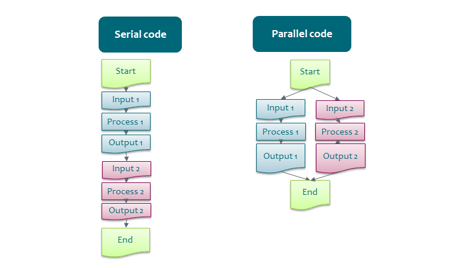

Parallel computing#
For fast computation, supercomputers utilize parallelism.

What to parallelize?#
Spatial data analysis often allows splitting at least some parts of the analysis to independent parts, that could be run in parallel:
Dividing data into parts:
Think how to divide the data: rectangular boxes, catchment areas, administrative units, chunks of vector data, data of different time periods, etc.
In many cases the borders need special care, one option is to use overlapping splitting of rasters.
Repeating the analysis with different parameters: scenarios, time periods, model settings, etc.
Think about your own work
Do you need to run a lot of steps one after another?
Or few steps that need a lot of memory?
Do steps depend on each other?
Which steps could be run in parallel?
Which steps cannot be run in parallel?
How to split your data?
How to parallelize?#
For doing analysis in parallel there are four main options:
Use spatial analysis tools with built-in parallel support
Write your own scripts using parallel libaries of different scripting languages
Use external tools to run the scripts in parallel
Write your own parallel code
When working on supercomputers, it is also important to understand whether the tool/script supports:
Multi-core - it runs in parallel only inside one node of the supercomputer.
Multi-node - it can distribute the work to several nodes of the supercomputer.
For multi-core there are clearly more options. The number of cores in a single node has been recently increasing, so also multi-core tools can be very useful.
Tools with built-in parallel support#
Check from the tool’s manual if it has built-in support for using multiple CPUs/cores. For command line tools, look for number_of_cores, cores, cpus, jobs, threads or similar. Unfortunately, not many GIS-tools have such options.
Some example geospatial tools with built-in parallel support:
GDAL, some commands e.g.
gdalwarp -multi -wo NUM_THREADS=val/ALL_CPUS ...FORCE
Lastools
OpenDronemap
OrfeoToolBox
PDAL-wrench
SNAP
Zonation
Whiteboxtools
All of these tools are multi-core, but not multi-node.
Define number of cores explicitly
GIS-tools are typically not written for supercomputers, so they might not understand HPC specifics correctly and may think that they can use more cores than is actually possible. It usually is better to define the number of cores to use explicitly, rather than “use all available cores”.
The deep learning libraries have options for Multi-GPU and multi-node machine learning.
Parallel libaries of scripting languages#
Many programming languages have packages for parallel computing.
Python and R have several packages for multi-core and multi-node parallelization, see Parallel Python and Parallel R for more details.
External tools to run the scripts in parallel#
Some external tools enable running scripts in parallel, with minimal changes to the scripts. This way of running programs is also called task farming or high-throughput computing. These tools have different levels of complexity and different features. The simpler ones are for running the same script with different input parameters, for example different input files, scenarios, time frames etc. More complicated tools support managing the whole workflow with several steps and with dependencies between steps. Workflow tools also help with making your work more reproducible by recording the computational steps and data. See CSC Docs: High-throughput computing and workflows for more information.
GNU Parallel#
GNU parallel is a general Linux tool for executing commands or scripts in parallel on one node. It iterates over an input list, which can be a list of files or input parameters. If the number of tasks is higher than the number of available cores, the process executes the tasks as the resources become available. GNU Parallel does not support dependencies between tasks.
Geocomputing examples: GDAL with GNU-parallel and PDAL with GNU-parallel
A more advanced example for using GNU-parallel for multi-node together with another tool.
Snakemake#
Snakemake is a scientific workflow management system that supports running for example R, bash and Python scripts. It can handle dependencies between the tasks and can be used with both multi-core and multi-node setups. Snakemake is one of the easiest tools for workflow management.
Write your own parallel code#
Parallel programs are typically parallelized with the MPI and/or OpenMP standards or using GPUs, but in this course we are not going to these topics.
CSC training calendar, look for advanced coding courses.